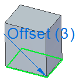

Offset command
Use the Offset command to make a selected face parallel to the target face and apply a user-defined offset distance.
The offset relationship is persisted by default. You can turn the persist option off while in the command.
You can choose the offset command first, and then select the seed face and target face. You can also create the face select set first and then choose the offset command, and then select the target face.
-
Supports faces from multiple bodies.
-
Creates offsets from inter-part copy faces.
-
Supports analytical faces (planar, cylindrical, torus, sphere, or cone).
-
Supports multiple offsets from a single face. The offset relationship edit handle displays the number of offsets it participates in.

-
Supports zero and negative offsets.
The Offset command has three options for applying offsets.
-
Single Align—Creates an offset relationship between the seed face and target face.
-
Multiple Align—Creates an offset relationship for each face in the select set. The offset value assigned is the distance between the seed face and target face. This value is applied to all offsets created.
-
Standard Align—Creates an offset relationship for each face in the select set. Each offset value is determined from the actual distance from the face and target face. Use this option create multiple offsets from a common face. When you select the common face, the edit handle displays the number of offsets it participates in.
How do I
Define a relationship between two facesLearn more
Defining relationships between model facesLook up more details
Coplanar commandCoplanar relationship command bar
Concentric command
Concentric relationship command bar
Symmetry command
Symmetry relationship command bar
Offset relationship command bar
Parallel command
Parallel relationship command bar
Aligned Holes command
Aligned Holes relationship command bar
Equal Radius command
Equal radius relationship command bar
Perpendicular command
Perpendicular relationship command bar
Tangent command
Tangent relationship command bar
Horizontal and Vertical command
Horizontal and vertical relationship command bar
Ground command
Ground relationship command bar
Rigid command
Rigid relationship command bar